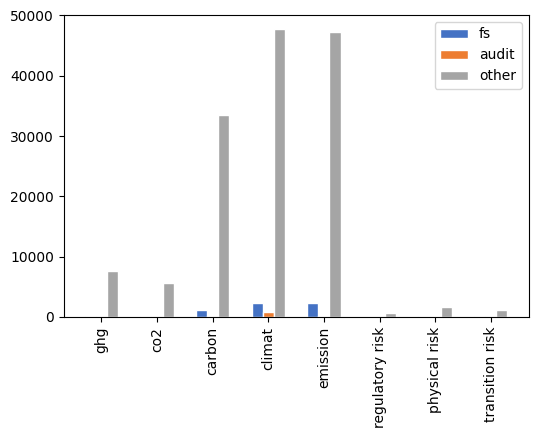

# ---
# title: "Connectivity Analyses"
# author: ["Maximilian A. Müller", "Gaizka Ormazabal", "Thorsten Sellhorn", "Victor Wagner"]
# institute: ["University of Cologne", "IESE", "LMU Munich School of Management", "LMU Munich School of Management"]
# number-sections: true
# toc: true
# format:
# pdf:
# geometry:
# - paper = a4paper
# fig-pos: 'h'
# html:
# toc: true
# jupyter: python3
# fig-width: 0.7
# ---Technical stuff
# echo: false
# output: asis
# # pdf:
# # geometry:
# # - paper=a4paper
# beamer:
# aspectratio: 169
# header-includes: |
# \setbeamertemplate{navigation symbols}{}
# \setbeamertemplate{footline}[page number]
Warning
This is the technical step-by-step procedure. Not interesting.
Getting started
- imports
- SRN data
- (check which firms and documents are needed and which are already here); Currently, we base our analyses on the documents that have already been manually coded (bottom-up); in the future, however, we do it top-down based on Euro Stoxx 600
- read in document data
- read in manually coded documents
- check which have to be downloaded (b/c they are not here) and update
- check which have to be extracted (b/c it hasn’t been done) and update
- prepare for later analysis and merge with other data
import sys, os, json, re
import pandas as pd
import numpy as np
import matplotlib.pyplot as plt
import seaborn as sns
from scipy import stats
# path to Dropbox directory with 'pdf', 'pdf-decrypt', 'docs_clean.json' and 'raw_texts.json'
BASE_PATH = "/Users/victor.wagner/Dropbox/_Connectivity-Data"API_PATH = "https://api.sustainabilityreportingnavigator.com/api/"
companies = pd.read_json(f'{API_PATH}companies')
documents = pd.read_json(f'{API_PATH}documents')
indices = pd.read_json(f'{API_PATH}indices')# es600 = companies[['1cc738c1-e6b1-4f2b-8bec-2d963118de59' in ind for ind in companies.indices]]
# es600[['id', 'name', 'isin', 'country', 'sector']].merge(
# documents[['id', 'year', 'type', 'company_id']],
# left_on='id', right_on='company_id',
# suffixes=('_company', '_document')
# ).query()Read in manually collected start/end pages
from mergeManualCollections import mergeManualCollections
manual_collections = mergeManualCollections([
'../data/connectivity-manual_collection - lmu_cologne - 20230926.csv',
'../data/connectivity-manual_collection-iese - main - 20230926.csv',
'../data/connectivity-manual_collection-iese - second_round - 20230926.csv',
])
print('We have', len(manual_collections), 'manually coded documents, of which',
len(set(manual_collections.index).difference(set([x[:36] for x in os.listdir(BASE_PATH + "/pdf/")]))),
'are not downloaded.')
Use the following with caution, this will download, extract and clean all documents if they are not stored locally.
Update pdfs if not all are downloaded yet
from downloadPdfs import downloadPdfs
doc_status = downloadPdfs(
BASE_PATH,
zip(manual_collections['href_doc'],
manual_collections.index)
)
print('There were', sum([x == 'downloaded' for x in doc_status]), 'new downloads,',
sum([x == 'no download' for x in doc_status]), 'document could not be downloaded.')There were 51 new downloads, 1 document could not be downloaded.Extract text from pdfs if not done so yet
raw_texts_old = pd.read_json(f"{BASE_PATH}/pdf/../raw_texts.json")
print('We already have raw text for', len(raw_texts_old), 'documents, decrypting and reading',
len(manual_collections)-len(raw_texts_old), 'documents now.')
from readTextFromPdf import readTextFromPdf
raw_texts_new, doc_status_new = [], []
raw_texts_new, doc_status_new = map(
list,
zip(*[readTextFromPdf(BASE_PATH, doc_id) for doc_id in manual_collections.index])
)
raw_texts_newDict = {doc_id: (r,s) for doc_id,r,s in zip(manual_collections.index, raw_texts_new, doc_status_new)}We already have raw text for 961 documents, decrypting and reading 0 documents now.from updateRawTexts import updateRawTexts
raw_texts_final = updateRawTexts(raw_texts_old, raw_texts_newDict)
raw_texts_final.to_json(f"{BASE_PATH}/pdf/../raw_texts.json")
print('There are', sum([x == 'problem_decrypting' for x in raw_texts_final.status]), 'documents with decryption problems',
'and', sum([x == 'problem_opening' for x in raw_texts_final.status]), 'documents that could not be read.')
print('This leaves us with a readable sample of', sum([x == 'fine' for x in raw_texts_final.status]), 'documents.')There are 184 documents with decryption problems and 0 documents that could not be read.
This leaves us with a readable sample of 777 documents.Clean text if not done so yet
docs_cleaned_old = pd.read_json(f"{BASE_PATH}/docs_clean.json")
print('There is already clean data for', len(docs_cleaned_old), 'documents, cleaning',
len(raw_texts_final.query('status == "fine"'))-len(docs_cleaned_old), 'documents.')
from updateAndCleanText import updateAndCleanText
docs_cleaned_new = updateAndCleanText(docs_cleaned_old, raw_texts_final)
docs_cleaned_new.to_json(f"{BASE_PATH}/pdf/../docs_clean.json")There is already clean data for 961 documents, cleaning -184 documents.del raw_texts_final, raw_texts_new, raw_texts_newDict, raw_texts_old
del docs_cleaned_oldMerge other data to documents
#docs_cleaned_new.drop(columns=['clean_text_full'], inplace=True)
docs = docs_cleaned_new.merge(
documents[['id', 'company_id', 'year']],
left_index=True, right_on='id'
).merge(
companies[['id', 'name', 'isin', 'country', 'sector']],
left_on='company_id', right_on='id',
suffixes=('', '_company')
).set_index(
'id', drop=True
).drop(
'id_company', axis=1
)Merge manually coded section data
docs = docs.merge(
manual_collections[['mda_begin', 'mda_end', 'fs_begin', 'fs_end', 'audit_begin', 'audit_end']],
left_index=True, right_index=True
)docs = docs.reset_index(
).merge(
docs.groupby(
['company_id']).size().reset_index(
).rename(
columns={0: 'company_years_avlbl'}), on='company_id'
).set_index('index')
# Drop obvious outlier
docs.drop(docs[(docs['isin'] == 'ES0130670112') & (docs['year'] == 2020)].index, inplace=True)Document sample selection
We distributed the EURO Stoxx 600 firms to student assistants to extract information on the structure of annual reports. So far, this resulted in the following documents sample: 1. no metadata in the SRN database yet, 1. after removing not readable pdfs, 2. pdfs where no text was scanned, and 3. pdfs with too little words (documents where the average clean text characters are less than 1,500 in a document).
docs0 = docs.query('status == "fine"')
docs1 = docs0.query('clean_text_len > 0')
docs2 = docs1.query('avgCleanTextPerPage > 1500')
TpdfSample = pd.DataFrame(columns=['', 'less', 'resulting'])
TpdfSample.loc[len(TpdfSample),:] = ['downloaded pdfs', '', len(docs_cleaned_new)]
TpdfSample.loc[len(TpdfSample),:] = ['no metadata', '-'+str(len(docs_cleaned_new) -len(docs)), len(docs)]
TpdfSample.loc[len(TpdfSample),:] = ['not readable', '-'+str(len(docs) -len(docs0)), len(docs0)]
TpdfSample.loc[len(TpdfSample),:] = ['zero text scanned', '-'+str(len(docs0)-len(docs1)), len(docs1)]
TpdfSample.loc[len(TpdfSample),:] = ['too little words*', '-'+str(len(docs1)-len(docs2)), len(docs2)]
#print(TpdfSample.to_markdown(index=False))
#print('\nThis leaves us with', len(docs2['company_id'].unique()), 'unique firms.')TpdfSample.reset_index(drop=True)| less | resulting | ||
|---|---|---|---|
| 0 | downloaded pdfs | 961 | |
| 1 | no metadata | -53 | 908 |
| 2 | not readable | -168 | 740 |
| 3 | zero text scanned | -28 | 712 |
| 4 | too little words* | -102 | 610 |
Keyword search
from findSections import findSections
pd.options.mode.chained_assignment = None # default='warn'
docsa = findSections(docs2)search_patterns = ['ghg', 'co2', 'carbon', 'climat', 'emission', 'regulatory risk', 'physical risk', 'transition risk']
print(search_patterns)['ghg', 'co2', 'carbon', 'climat', 'emission', 'regulatory risk', 'physical risk', 'transition risk']lim = 200
def searchText(doc, search_patterns):
matches = []
for section in ['mda_text', 'fs_text', 'audit_text', 'other_text']:
for pat in search_patterns:
for page, text in doc[section+'_dict'].items():
for hit in re.finditer(pat, text):
matches.append({
'pattern': pat,
'section': section[:-5],
'snippet': text[hit.start()-lim : hit.start()+len(pat)+lim],
'page' : page
})
return matches
docsa['hits'] = [pd.DataFrame(searchText(doc, search_patterns)) for _, doc in docsa.iterrows()]# for sec in sections:
# docsamax[sec+'_hit'] = [len(list(filter(lambda hit: hit['section'] == sec, searchText(doc, search_patterns)))) for _, doc in docsa.iterrows()]
# for pat in search_patterns:
# docsamax[pat+'_hit'] = [len(list(filter(lambda hit: hit['pattern'] == pat, searchText(doc, search_patterns)))) for _, doc in docsa.iterrows()]
# docsamax[pat+'_fs_hit'] = [len(list(filter(lambda hit: (hit['pattern'] == pat) and (hit['section'] == 'fs'), searchText(doc, search_patterns)))) for _, doc in docsa.iterrows()]
# snippets = pd.DataFrame(columns=['document_id', 'isin', 'year', 'pattern', 'section', 'snippet'])
# for idx, doc in docsa.iterrows():
# for _, hit in doc.hits.iterrows():
# snippets.loc[len(snippets)] = [idx, doc['isin'], doc['year'], hit['pattern'], hit['section'], hit['snippet']]
# snippets.info()
# snippets.to_csv('snippets.csv', index=False)pd.read_csv('../data/worldscope_msci_carbon.csv')Analyses
import matplotlib as mpl
mpl.rcParams['figure.dpi'] = 200
sections = ['fs', 'audit', 'mda', 'other']
years = sorted(docsa.year.unique())
colors = ['#ff1f5b', '#009ade', '#af58ba', '#ffc61e']Sample and method
- We downloaded 961 annual reports from Euro Stoxx 600 firms in pdf format
- After cleaning (see more Section 0.2), we were able to extract text from 611 documents
- We then manually classified different sections of these reports
- MD&A (a.k.a. management report, Lagebericht, etc.)
- Financial Statements and Notes
- Auditor’s Report
- And searched for climate-related keywords
Keywords over time
data = docsa.copy()
for sec in sections:
data[sec+'_hits'] = [len(list(filter(lambda hit: hit['section'] == sec, searchText(doc, search_patterns)))) for _, doc in docsa.iterrows()]
data['total_hits'] = [len(searchText(doc, search_patterns)) for _, doc in docsa.iterrows()]avg_hits_perSec_perYear = [[np.mean(data.query('year == @year')[sec+'_hits']) for year in years] for sec in sections]
med_hits_perSec_perYear = [[np.median(data.query('year == @year')[sec+'_hits']) for year in years] for sec in sections]
avg_hitsPerPage_perSec_perYear = [[np.mean(data.query('year == @year')[sec+'_hits']/data.query('year == @year')['n_pages']) for year in years] for sec in sections]fs_hits_avg_yrs = [np.mean(data.query('year == @year')['fs_hits']) for year in years]
audit_hits_avg_yrs = [np.mean(data.query('year == @year')['audit_hits']) for year in years]
mda_hits_avg_yrs = [np.mean(data.query('year == @year')['mda_hits']) for year in years]
other_hits_avg_yrs = [np.mean(data.query('year == @year')['other_hits']) for year in years]
fs_hits_med_yrs = [np.median(data.query('year == @year')['fs_hits']) for year in years]
audit_hits_med_yrs = [np.median(data.query('year == @year')['audit_hits']) for year in years]
mda_hits_med_yrs = [np.median(data.query('year == @year')['mda_hits']) for year in years]
other_hits_med_yrs = [np.median(data.query('year == @year')['other_hits']) for year in years]fs_hits_byY = [data.query('year == @year')['fs_hits'].values for year in years]
fs_hits_ci = [stats.t.interval(0.95, len(hits_byY)-1, loc=hits_byY.mean(), scale=hits_byY.std()) for hits_byY in fs_hits_byY]
fs_hits_iqr = [stats.iqr(x) for x in fs_hits_byY]
fs_hits_q1 = [np.quantile(data.query('year == @year')['fs_hits'], 0.25) for year in years]
fs_hits_q3 = [np.quantile(data.query('year == @year')['fs_hits'], 0.75) for year in years]
audit_hits_byY = [data.query('year == @year')['audit_hits'].values for year in years]
audit_hits_ci = [stats.t.interval(0.95, len(hits_byY)-1, loc=hits_byY.mean(), scale=hits_byY.std()) for hits_byY in audit_hits_byY]
audit_hits_iqr = [stats.iqr(x) for x in audit_hits_byY]
audit_hits_q1 = [np.quantile(data.query('year == @year')['audit_hits'], 0.25) for year in years]
audit_hits_q3 = [np.quantile(data.query('year == @year')['audit_hits'], 0.75) for year in years]fig, ax1 = plt.subplots()
ax1.plot(years, med_hits_perSec_perYear[0], 'o-', color='#ff1f5b', label='fs+notes')
ax1.plot(years, med_hits_perSec_perYear[1], 'o-', color='#009ade', label='audit')
# for year, n in zip(years, range(len(years))):
# ax1.plot(
# (year, year),
# (med_hits_perSec_perYear[0][n]+fs_hits_q3[n],
# med_hits_perSec_perYear[0][n]-fs_hits_q1[n]),
# '_-', color='#ff1f5b', alpha=0.5
# )
# ax1.plot(
# (year, year),
# (med_hits_perSec_perYear[1][n]+audit_hits_q3[n],
# med_hits_perSec_perYear[1][n]-audit_hits_q1[n]),
# '_-', color='#009ade', alpha=0.5
# )
ax1.set_ylabel('median hits per section')
docsPerYear = [len(data.query('year == @year')) for year in years]
ax2 = ax1.twinx()
ax2.bar(x=years, height=docsPerYear, color='gray', alpha=0.2)
ax2.set_ylim([0,600])
ax2.tick_params(axis='y')
ax2.set_ylabel('#docs')
plt.table([[round(y, 2) for y in x] for x in med_hits_perSec_perYear+[docsPerYear]],
rowLabels=['fs+notes', 'audit', 'mda', 'other', '#docs'],
rowColours=['#ff1f5b', '#009ade', '#ffffff', '#ffffff', 'lightgray'],
colLabels=years, loc='bottom', cellLoc='right', edges='horizontal', bbox=[0, -0.4, 1, 0.4])
ax1.set_xticks([])
ax2.set_xticks([])
#ax1.set_title(f'n={len(data)} reports with {sum(data["total_hits"])} total keyword hits with IQR')
ax1.legend()#ncol=4, bbox_to_anchor=(0.75,-0.1))
#fig.savefig('figures/fig202309271823.png', dpi=400, bbox_inches='tight')
plt.show()
from scipy.interpolate import make_interp_spline
splined_fs = make_interp_spline(years, avg_hits_perSec_perYear[0])
splined_audit = make_interp_spline(years, avg_hits_perSec_perYear[1])
years_spl = np.linspace(min(years), max(years), 500)
y_fs = splined_fs(years_spl)
y_audit = splined_audit(years_spl)fig, ax1 = plt.subplots()
ax1.plot(years_spl, y_fs, '-', color='#ff1f5b', label='fs+notes')
ax1.plot(years_spl, y_audit, '-', color='#009ade', label='audit')
# for year, n in zip(years, range(len(years))):
# ax1.plot(
# (year, year),
# (avg_hits_perSec_perYear[0][n]+fs_hits_ci[n][0],
# avg_hits_perSec_perYear[0][n]+fs_hits_ci[n][1]),
# '_-', color='#ff1f5b', alpha=0.5)
# ax1.plot(
# (year, year),
# (avg_hits_perSec_perYear[1][n]+audit_hits_ci[n],
# avg_hits_perSec_perYear[1][n]+audit_hits_ci[n]),
# '_-', color='#009ade', alpha=0.5)
ax1.set_ylabel('average hits per section')
docsPerYear = [len(data.query('year == @year')) for year in years]
ax2 = ax1.twinx()
ax2.bar(x=years, height=docsPerYear, color='gray', alpha=0.2)
ax2.set_ylim([0,600])
ax2.tick_params(axis='y')
ax2.set_ylabel('#docs')
plt.table([[round(y, 2) for y in x] for x in avg_hits_perSec_perYear+[docsPerYear]],
rowLabels=['fs+notes', 'audit', 'mda', 'other', '#docs'],
rowColours=['#ff1f5b', '#009ade', '#ffffff', '#ffffff', 'lightgray'],
colLabels=years, loc='bottom', cellLoc='right', edges='horizontal', bbox=[0, -0.4, 1, 0.4])
ax1.set_xticks([])
ax2.set_xticks([])
#ax1.set_title(f'n={len(data)} reports with {sum(data["total_hits"])} total keyword hits with IQR')
ax1.legend()#ncol=4, bbox_to_anchor=(0.75,-0.1))
#fig.savefig('figures/fig202309280927.png', dpi=400, bbox_inches='tight')
plt.show()fig, ax1 = plt.subplots()
ax1.plot(years, avg_hits_perSec_perYear[0], 'o-', color='#ff1f5b', label='fs+notes')
ax1.plot(years, avg_hits_perSec_perYear[1], 'o-', color='#009ade', label='audit')
ax1.plot(years, avg_hits_perSec_perYear[2], 'o-', color='#af58ba', label='mda')
ax1.plot(years, avg_hits_perSec_perYear[3], 'o-', color='#ffc61e', label='other')
ax1.set_ylabel('average hits per section')
docsPerYear = [len(data.query('year == @year')) for year in years]
ax2 = ax1.twinx()
ax2.bar(x=years, height=docsPerYear, color='gray', alpha=0.2)
ax2.set_ylim([0,600])
ax2.tick_params(axis='y')
ax2.set_ylabel('#docs')
plt.table([[round(y, 2) for y in x] for x in avg_hits_perSec_perYear+[docsPerYear]],
rowLabels=['fs+notes', 'audit', 'mda', 'other', '#docs'],
rowColours=['#ff1f5b', '#009ade', '#af58ba', '#ffc61e', 'lightgray'],
colLabels=years, loc='bottom', cellLoc='right', bbox=[0, -0.4, 1, 0.4])
ax1.set_xticks([])
ax2.set_xticks([])
#ax1.set_title(f'n={len(data)} reports with {sum(data["total_hits"])} total keyword hits')
ax1.legend()#ncol=4, bbox_to_anchor=(0.75,-0.1))
#fig.savefig('figures/fig202309272029.png', dpi=400, bbox_inches='tight')
plt.show()fig, ax1 = plt.subplots()
ax1.plot(years, avg_hitsPerPage_perSec_perYear[0], 'o-', color='#ff1f5b', label='fs+notes')
ax1.plot(years, avg_hitsPerPage_perSec_perYear[1], 'o-', color='#009ade', label='audit')
ax1.plot(years, avg_hitsPerPage_perSec_perYear[2], 'o-', color='#af58ba', label='mda')
ax1.plot(years, avg_hitsPerPage_perSec_perYear[3], 'o-', color='#ffc61e', label='other')
ax1.set_ylabel('average hits per page by section')
docsPerYear = [len(data.query('year == @year')) for year in years]
ax2 = ax1.twinx()
ax2.bar(x=years, height=docsPerYear, color='gray', alpha=0.2)
ax2.set_ylim([0,600])
ax2.tick_params(axis='y')
ax2.set_ylabel('#docs')
plt.table([[round(y, 2) for y in x] for x in avg_hitsPerPage_perSec_perYear+[docsPerYear]],
rowLabels=['fs+notes', 'audit', 'mda', 'other', '#docs'],
rowColours=['#ff1f5b', '#009ade', '#af58ba', '#ffc61e', 'lightgray'],
colLabels=years, loc='bottom', cellLoc='right', bbox=[0, -0.4, 1, 0.4])
ax1.set_xticks([])
ax2.set_xticks([])
#ax1.set_title(f'n={len(data)} reports with {sum(data["total_hits"])} total keyword hits')
ax1.legend()#ncol=4, bbox_to_anchor=(0.75,-0.1))
#fig.savefig('figures/fig202309272029.png', dpi=400, bbox_inches='tight')
plt.show()
Keyword distribution in the reports
# fig, ax = plt.subplots(1,4,figsize=(12,3), sharey=True)
# #ax[0].hist(data.total_hits, color='lightgray')
# ax[0].hist(data.fs_hits, color='#ff1f5b')
# ax[1].hist(data.audit_hits, color='#009ade')
# ax[2].hist(data.mda_hits, color='#af58ba')
# ax[3].hist(data.other_hits, color='#ffc61e')
# for n, title in zip(range(4), ['fs+notes', 'audit', 'mda', 'other']):
# ax[n].set_title(title)
# plt.suptitle(f'Distribution of hits per document by section', y=1.1)
# plt.savefig('figures/fig202309271836.png', dpi=400, bbox_inches='tight')Keyword ranking
data = docsa.copy()
for pat in search_patterns:
data[pat] = [len(list(filter(lambda hit: hit['pattern'] == pat, searchText(doc, search_patterns)))) for _, doc in docsa.iterrows()]
data['total_hits'] = [len(searchText(doc, search_patterns)) for _, doc in docsa.iterrows()]fig, ax = plt.subplots()
ax.bar(search_patterns, [np.sum(data[pat].values) for pat in search_patterns], color='#a0b1ba', zorder=2)
#ax.set_title(f'Distribution of hits per keyword (total hits={sum(data.total_hits)})')
ax.text(6.45,30500,f'n={sum(data.total_hits)}')
plt.grid(axis='y', color='lightgray', zorder=0)
plt.xticks(rotation=90)
plt.savefig('figures/fig202309272100.png', dpi=400, bbox_inches='tight')Keyword ranking by section
The difference b/w the total number of search hits is because from here, I included ghg and co2
sections = ['fs', 'audit', 'mda', 'other']
totals = {k:v for k,v in zip(
sections,
[[sum(len(list(filter(lambda hit: (hit['section'] == sec) & (hit['pattern'] == pat), searchText(doc, search_patterns))))
for _, doc in docsa.iterrows())
for pat in search_patterns]
for sec in sections]
)}import matplotlib as mpl
mpl.rcParams['axes.prop_cycle'] = mpl.cycler(color=['#ff1f5b', '#009ade', '#af58ba', '#ffc61e'])
fig, ax = plt.subplots()
width = 0.2
label_locs = np.arange(len(search_patterns))
multiplier = 0
for sec in list(totals.keys())[:2]:
offset = width * multiplier
ax.bar(label_locs+offset, totals[sec], width=width, label=sec, edgecolor='w')
#ax.bar_label(rects, padding=3)
multiplier += 1
ax.set_xticks(label_locs+width)
ax.set_xticklabels(search_patterns)
plt.xticks(rotation=90)
ax.legend()
plt.savefig('figures/fig202309272158.png', dpi=400, bbox_inches='tight')
fig, ax = plt.subplots()
width = 0.2
label_locs = np.arange(len(search_patterns))
multiplier = 0
for sec, byKeyword in totals.items():
offset = width * multiplier
ax.bar(label_locs+offset, byKeyword, width=width, label=sec, edgecolor='w')
#ax.bar_label(rects, padding=3)
multiplier += 1
ax.set_xticks(label_locs+width)
ax.set_xticklabels(search_patterns)
plt.xticks(rotation=90)
ax.legend(loc='upper right')
plt.savefig('figures/fig202309272147.png', dpi=400, bbox_inches='tight')
Heatmap of hits in the document
data1 = pd.DataFrame(columns=[
'document_id', 'company_id', 'year', 'fs_begin', 'fs_end', 'audit_begin', 'audit_end',
'pattern', 'section', 'page'
])
for doc_id, doc in docsa.iterrows():
for _, hit in doc.hits.iterrows():
if (hit.section == 'fs') or (hit.section == 'audit'):
data1.loc[len(data1)] = [
doc_id, doc.company_id, doc.year, doc.fs_begin, doc.fs_end, doc.audit_begin, doc.audit_end,
hit.pattern, hit.section, hit.page
]data1_onlyFS = data1.query('section == "fs"').drop(['audit_begin', 'audit_end', 'section'], axis=1)
data1_onlyaudit = data1.query('section == "audit"').drop(['fs_begin', 'fs_end', 'section'], axis=1)data1_onlyFS_noMult = data1_onlyFS[[',' not in str(x) for x in data1_onlyFS['fs_begin']]]
data1_onlyaudit_noMult = data1_onlyaudit[[',' not in str(x) for x in data1_onlyaudit['audit_begin']]]
print('By restricting to no multi-start sections, we lose',
len(data1_onlyFS)-len(data1_onlyFS_noMult), 'snippets.\n',
'Left:', len(data1_onlyFS_noMult))By restricting to no multi-start sections, we lose 34 snippets.
Left: 4178data1_onlyFS_noMult['location'] = [int(snip['page']) / int(snip['fs_end']) for _,snip in data1_onlyFS_noMult.iterrows()]
data1_onlyaudit_noMult['location'] = [int(snip['page']) / int(snip['audit_end']) for _,snip in data1_onlyaudit_noMult.iterrows()]fig, ax = plt.subplots(nrows=3, ncols=1, sharex=True, figsize=(6,6))
customprops = dict(linestyle='--', linewidth=1, color='gray')
# ax.boxplot(data1_onlyFS_noMult['location'], showfliers=0, showmeans=1, meanline=1, showcaps=0,
# boxprops=customprops, whiskerprops=customprops, capprops=customprops,
# medianprops=dict(color='#ff1f5b'), meanprops=dict(linestyle=':', linewidth=1, color='gray'))
for n, year in enumerate([2018, 2020, 2022]):
sns.stripplot(data=data1_onlyFS_noMult.query('year == @year'),
x='location', y='pattern',
color=colors[n], alpha=0.4, size=2.5, ax=ax[n], order=search_patterns)
ax[n].grid(color='lightgray', axis='y', linestyle='dashed')
ax[n].set_ylabel('')
ax[n].set_title(year)
ax[0].set_xlim([0,1])
ax[2].set_xlabel('')
plt.show()
Cross-sectional splits
snippets[snippets.document_id == 'f6d019db-5b4d-4b4b-b989-427262d0873b'].query('section == "fs"')| document_id | isin | year | pattern | section | snippet | |
|---|---|---|---|---|---|---|
| 87779 | f6d019db-5b4d-4b4b-b989-427262d0873b | DE000DTR0CK8 | 2021 | carbon | fs | joint venture in january 2022, daimler truck ... |
| 87780 | f6d019db-5b4d-4b4b-b989-427262d0873b | DE000DTR0CK8 | 2021 | emission | fs | t can only remain successful over the longterm... |
| 87781 | f6d019db-5b4d-4b4b-b989-427262d0873b | DE000DTR0CK8 | 2021 | emission | fs | ainable corporate governance. this includes th... |
| 87782 | f6d019db-5b4d-4b4b-b989-427262d0873b | DE000DTR0CK8 | 2021 | emission | fs | echnology path in the future and explore the p... |
| 87783 | f6d019db-5b4d-4b4b-b989-427262d0873b | DE000DTR0CK8 | 2021 | emission | fs | orecasted planning periods as well as within c... |
| 87784 | f6d019db-5b4d-4b4b-b989-427262d0873b | DE000DTR0CK8 | 2021 | emission | fs | her european truck manufacturers for their par... |
Interactive
# #| fig-cap: Average keyword hits per section over time
# fig, ax1 = plt.subplots()
# ax1.plot(years, avg_hits_perSec_perYear[0], 'o-', color='#ff1f5b', label='fs+notes')
# ax1.plot(years, avg_hits_perSec_perYear[1], 'o-', color='#009ade', label='audit')
# ax1.set_ylabel('average hits per section')
# ax1.set_xticks(years)
# ax1.legend()
# plt.show()Document descriptives
fig, ax = plt.subplots(1,3, figsize=(12,3))
ax[0].hist(docsa['n_pages'], edgecolor="w", bins=25, color='#a0b1ba')
ax[0].set_title(f'Panel A. Total page numbers')
ax[1].hist(docsa['clean_text_len'], edgecolor="w", bins=25, color='#a0b1ba')
ax[1].set_title(f'Panel B. Clean text lengths')
ax[2].hist(docsa['avgCleanTextPerPage'], edgecolor="w", bins=25, color='#a0b1ba')
ax[2].set_title(f'Panel C. Clean text lengths per page')
ax[2].text(x=8400, y=-20, s=f'Cropped at 1,500', ha='right')
fig.suptitle(f"n={len(docsa)} documents", y=1.1)
plt.show()
#fig.savefig('figures/fig202309272049.png', dpi=400, bbox_inches='tight')
import nltkfrom nltk.tokenize import sent_tokenize, word_tokenizex = sent_tokenize(docsa.iloc[0]['fs_text'])
x